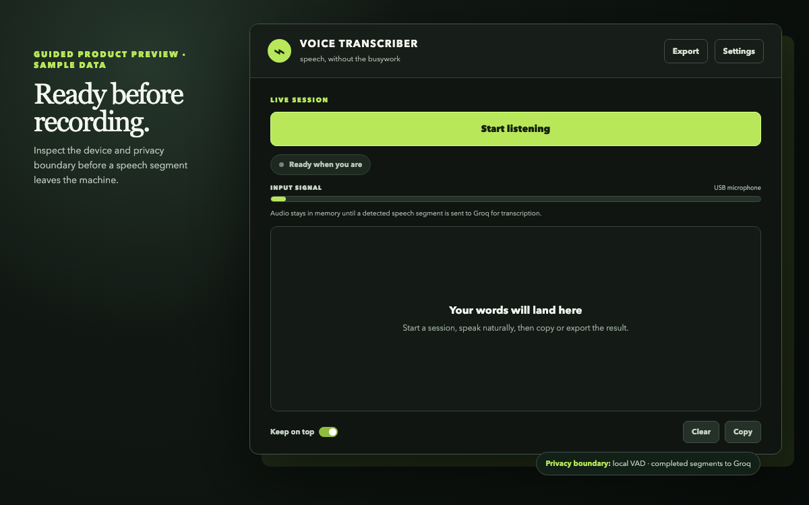
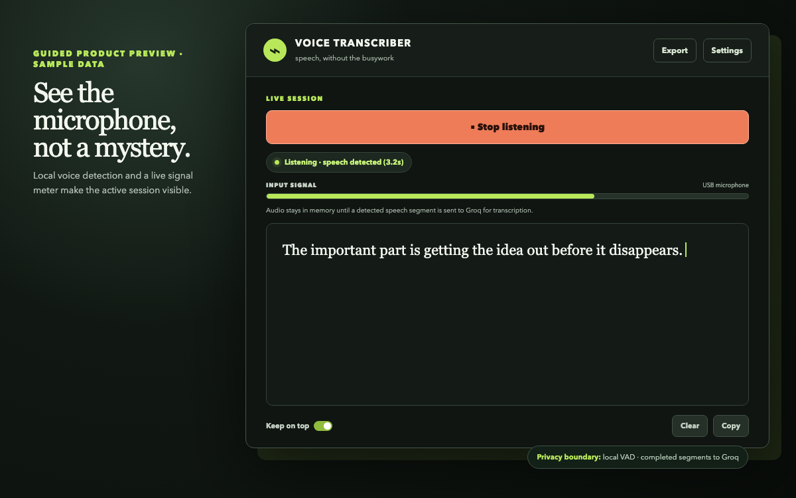
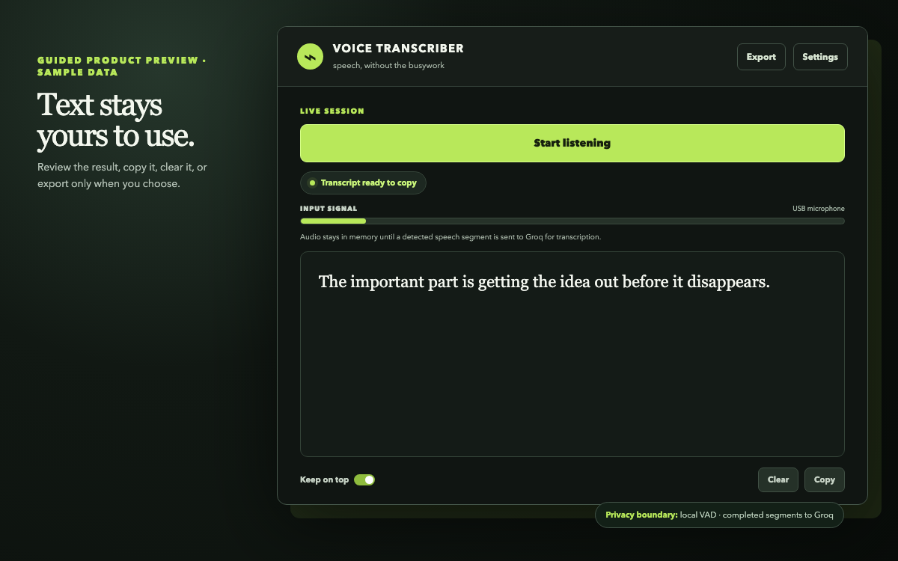

{kind=link}
Stays on your device
- Raw microphone frames in a bounded memory queue
- The active transcript until you clear, copy, or export it
- Window preferences and local settings
Linux dictation · v1.0 Flatpak · explicit provider boundary
Turn a spoken note, prompt, email, or draft into editable text on Linux. Voice Transcriber filters silence locally, shows exactly when completed speech segments go to Groq, and leaves storage under your control.
No raw-audio recording or analytics. History is off by default. Inspect the app and its boundary before adding a key.
LIVE SESSION
Listening · speech detected (3.2s)
“The important part is getting the idea out before it disappears.”
Guided product tour · synthetic sample text
These reproducible previews mirror the current native GTK states. The application itself never inserts a simulated transcript.



The point
There is no audio library to organise and no generic dashboard to navigate. Start a session, talk naturally, then put the words where they belong.
The short path
Choose a microphone and confirm its local signal before 30 ms frames enter a bounded real-time queue.
Voice activity detection runs on your device, so silence never becomes a transcription request.
Completed segments cross the visibly selected provider boundary through a small bounded request pool.
Review the growing transcript, then copy it or export a local UTF-8 text file.
An honest boundary
Stays on your device
Sent when you speak
Release proof, not a trust badge
Every v1 release maps its source tag to one Flatpak and publishes the evidence needed to inspect it. Automated package proof is kept separate from the real-microphone compatibility reports still being collected.
Inspect the v1 release · Read the support boundary · Choose a contribution
Checksum-verified x86_64 Flatpak
curl -LO https://github.com/OthmaneBlial/audio-capture/releases/download/v1.0.0/voice-transcriber-1.0.0-x86_64.flatpak
curl -LO https://github.com/OthmaneBlial/audio-capture/releases/download/v1.0.0/voice-transcriber-1.0.0-x86_64.flatpak.sha256
sha256sum --check voice-transcriber-1.0.0-x86_64.flatpak.sha256
flatpak install --user ./voice-transcriber-1.0.0-x86_64.flatpak
flatpak run io.github.othmaneblial.audio_captureThe primary package targets x86_64 Linux with GTK 3 and the system PipeWire/PulseAudio route. The UI, device picker, diagnostics, and privacy explanation work without a key; Start stays blocked until the selected provider is ready. Read the support matrix or use the source development path.
Built for the moment